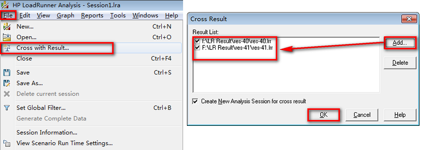
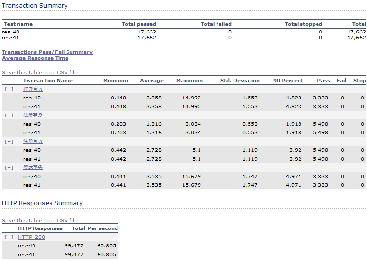
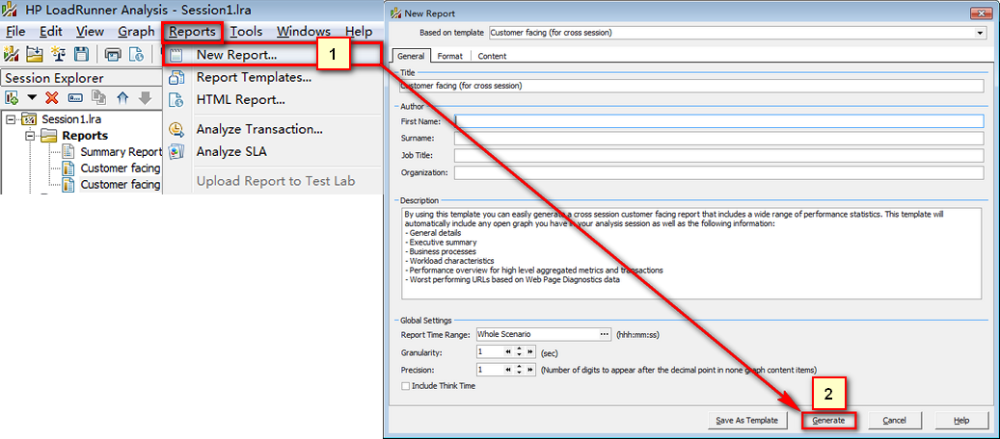
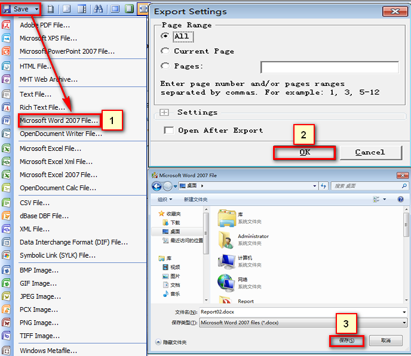

交叉结果与性能报告生成
目标
- 掌握交叉结果的应用
- 了解LR导出报告的方式
一、交叉结果的应用
本轮的测试结果诞生是根据上一轮测试结果进行分析、由相关人员进行调优后进行的重新测试，需要确定调优是否有所改善
交叉结果是指相同场景下两次测试结果进行交叉对比，在 LR 中把这种对比两次结果指标叫做交叉结果
交叉结果应用

- 在Analysis工具点击File菜单 -> Cross with Result...
- 点击Add添加上次结果目录文件 (.lrr)
提示:
1. .lrr文件为场景运行后的收集的结果，默认保存在当前用户下的临时文件夹
(如：C:\Users\Administrator\AppData\Local\Temp)
2. .lrr保存目录，可在菜单【Result】-> Set Result Directory进行修改
效果图

之前两张报表有的数据都会产生对比，以上摘要报告只是举例说明
二、性能报告生成
LoadRunner 支持导出非常丰富的报告类型(如：HTML、Word、PDF)等，我们常用的是Word(可编写)
2.1 生成报告 步骤
- 生成模板
- 在模板上导出指定报告类型
1. 生成模板

- 在Analysis菜单(Reports) -> New Report
- 直接点击 Generate(生成)模板
提示：
General、Format、Content为选填信息，可以不填，我们需要修改自己公司关注的东西；
1. General(普通选项)：标题、作者等信息
2. Format(报告格式)：报告格式设置
3. Content(报告内容)：报告内容修改等
2. 导出报告

标记1：在报告模板内选择Save菜单 -> Microsoft Word 2007 File...
标记2：导出设置，默认ALL(全部)导出 直接点击OK
标记3：保存报告路径和名称
提示：
1. 以上为Word版格式，导起来稍微繁琐，因为我们常用的Word格式，可以对报告内图表文字进行修改；
2. 如果需要导出HTML格式报告，菜单(Reports) -> HTML Report